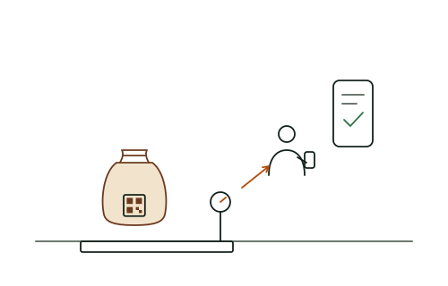
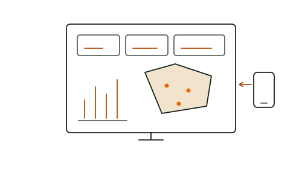

La technologie au service du progrès africain.
Kaada Group (KDG) est une entreprise technologique africaine. Nous accompagnons les entreprises, les institutions et les organisations dans leur transformation numérique : du conseil au développement logiciel, du cloud à l'intelligence artificielle, nous concevons, développons et déployons des solutions adaptées à leurs enjeux et à leurs réalités. Notre expertise agricole nous permet d'aller plus loin : moderniser les chaînes de valeur agricoles, de la parcelle jusqu'à l'acheteur.
Un seul partenaire, de l'idée à la mise en production.
Transformation numérique, logiciel, cloud, intelligence artificielle, systèmes d'information et agritech : nous couvrons toute la chaîne. Vous n'avez pas à coordonner plusieurs prestataires : une équipe KDG suit votre projet du diagnostic jusqu'à la maintenance.
Transformation numérique
Diagnostic numérique, stratégie, optimisation des processus et accompagnement au changement : nous partons de votre organisation avant de choisir la technologie.
Développement logiciel et applications
Logiciels métier, plateformes web et applications mobiles sur mesure, pensés pour les réseaux mobiles africains et utilisables hors connexion.
Cloud et infrastructure
Architecture, hébergement, migration, déploiement continu et supervision. Une infrastructure qui tient la charge pendant les pics de campagne.
Intelligence artificielle et données
Automatisation des tâches, assistants, modèles prédictifs et tableaux de bord que vos équipes, vos acheteurs et vos bailleurs comprennent.
Systèmes d'information et intégration
Architecture applicative, ERP, interconnexion de vos logiciels et intégration d'API, y compris le paiement par mobile money : vos données circulent sans ressaisie.
Agritech et digitalisation agricole
Producteurs et coopératives, traçabilité, cartographie des parcelles et conformité EUDR : notre spécialisation, au service des filières.
Nous connaissons le terrain avant d'écrire la première ligne de code.
Traçabilité, conformité au règlement européen contre la déforestation (EUDR), registre et paiement des producteurs, protection de l'enfance : nous concevons des outils qui partent des exigences réelles des filières africaines.
- Étape 1
Collecte hors-ligne
L'agent saisit les données et trace la parcelle, même sans réseau.
- Étape 2
Synchronisation
Les données remontent dès que le téléphone capte.
- Étape 3
Contrôle qualité
Doublons, polygones incohérents et valeurs aberrantes sont signalés.
- Étape 4
Analyse
Tableaux de bord par coopérative, zone et campagne.
- Étape 5
Rapports
Données prêtes à transmettre aux acheteurs, aux certificateurs et aux bailleurs.
Cartographie des parcelles
Relevés GPS, polygonage et vérification des superficies. Chaque plantation est géolocalisée et rattachée à son producteur.
Traçabilité de la chaîne d'approvisionnement
Du producteur à la coopérative, puis à l'exportateur. Chaque sac est rattaché à son origine.
Conformité EUDR et certifications
Analyse du risque de déforestation, dossiers de diligence raisonnée et données prêtes pour les audits.
Recensement et enquêtes producteurs
Profils des ménages, enquêtes socio-économiques et études de référence menées avec des agents formés.
Protection de l'enfance et droits humains
Outils numériques pour les systèmes de suivi et de remédiation du travail des enfants (SSRTE / CLMRS).
Coopératives et paiements des producteurs
Achats, pesées, primes et paiements par mobile money. Chaque producteur sait ce qu'il a livré et ce qu'il a reçu.
Des plateformes prêtes à l'emploi, nées de nos projets de terrain.
La traçabilité et la conformité EUDR, prêtes à l'emploi.
Polygones contrôlés et corrigés automatiquement, analyse du risque de déforestation intégrée, lots tracés à la parcelle et dossiers de diligence raisonnée : Sankora réunit tout ce que le RDUE exige, dans une seule plateforme.
Data4Child : chaque enfant suivi jusqu'à sa sortie.
Collecte hors ligne, classement automatique des cas, délais de remédiation surveillés et statistiques protégées : le suivi du travail des enfants, enfin fiable.
Du terrain au tableau de bord, trois types de projets.
Trois exemples de ce que nous concevons : des outils qui fonctionnent sans réseau, des données que l'on peut vérifier et des tableaux de bord qui servent à décider.

Achats et traçabilité des produits agricoles
Une application d'achat qui fonctionne hors connexion : pesées, suivi des paiements et rattachement de chaque lot à ses producteurs.
Voir les domaines agritech
Cartographie des parcelles et données EUDR
Relevés GPS, contrôle des polygones, croisement avec les cartes de couvert forestier et préparation des données de diligence raisonnée.
Comprendre l'EUDR
Plateformes métier et tableaux de bord
Applications sur mesure, intégration à vos outils existants et tableaux de bord par site, zone ou équipe.
Voir nos expertisesLa même rigueur, dans tous les secteurs.
L'agriculture est notre spécialité, pas notre limite. Les méthodes que nous appliquons sur le terrain servent aussi d'autres organisations.
ONG et développement
Suivi-évaluation, collecte de données de projet et tableaux de bord d'impact pour les bailleurs.
Institutions publiques
Recensements, registres numériques et plateformes de services aux citoyens.
Finance et microfinance
Crédit, scoring, mobile money et outils de gestion des agences.
Éducation et santé
Évaluation des apprentissages, suivi des programmes et données sanitaires.
Commerce et distribution
Forces commerciales terrain, stocks, ventes et réseaux de distributeurs.
Agroalimentaire et industrie
Approvisionnement, qualité, production et traçabilité en usine.
Collecte et recyclage
Enregistrement des collecteurs, pesées, paiements et traçabilité des matières recyclées.
La technologie, l'agriculture et le terrain africain, réunis.
Nous associons une expertise technologique ouverte sur les pratiques internationales, une connaissance concrète des enjeux agricoles et une compréhension des réalités africaines, pour des organisations de toutes tailles.
Nous comprenons vos besoins
Nous passons du temps avec vos équipes, y compris sur le terrain, avant de proposer une solution. Le cahier des charges part de votre réalité.
Les bonnes personnes
Développeurs, architectes, analystes de données et superviseurs de terrain : chaque projet est confié aux profils qui connaissent le sujet.
Transparence et visibilité
Points d'avancement réguliers, accès aux versions de test et indicateurs partagés. Vous savez à tout moment où en est votre projet.
Un seul interlocuteur
Logiciel, hébergement, collecte, analyse et formation des utilisateurs : une seule équipe suit l'ensemble.
Budget et délais cadrés
Un périmètre clair, un calendrier découpé en étapes et un budget validé ensemble avant le démarrage.
Une communication directe
Vous échangez directement avec l'équipe qui travaille sur votre projet, en français ou en anglais, par téléphone ou WhatsApp.
Cinq étapes, du diagnostic à l'exploitation.
Chaque étape se termine par une validation avec vous. Rien n'avance sans votre accord.
- 01
Diagnostic
Un échange de 45 minutes, en visio ou à Abidjan, sur votre besoin et vos contraintes de terrain.
Offert - 02
Conception
Architecture, maquettes interactives, plan de projet et budget validé.
Validée avec vous - 03
Développement
Sprints de deux semaines, démonstrations et tests continus.
Agile - 04
Déploiement
Mise en production, migration des données, formation des équipes.
Accompagné - 05
Exploitation
Supervision, maintenance, support local et évolutions.
Contrat de service
Vous avez un projet de transformation numérique ?
Échangeons sur vos besoins et construisons ensemble une solution adaptée à vos ambitions. Décrivez votre projet en quelques lignes : nous revenons vers vous sous 24 heures ouvrées pour organiser un premier échange, gratuit et sans engagement.
Écrivez-nous ou appelez-nous
Décrivez votre projet en quelques lignes à contact@kaadagroup.com, ou appelez-nous au +225 05 45 61 65 65. Nous vous répondons sous 24 heures ouvrées.
Diagnostic offert : un échange de 45 minutes, en visio ou à Abidjan, sans engagement.
Indiquez seulement ce qui est utile à votre demande : nom, organisation, moyen de vous recontacter et objet. Vos données et vos droits.